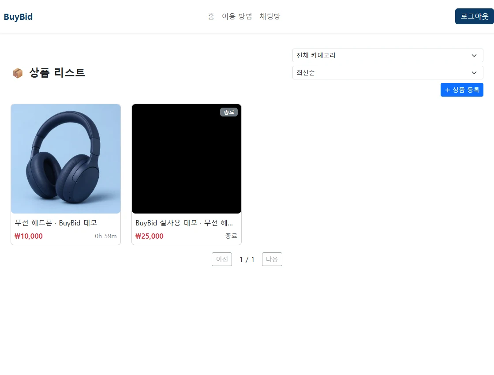

트랜잭션과 잠금
두 구매 요청 중
하나만 낙찰된다
먼저 상품 행을 잠근 요청이 거래 상태를 검사하고, 낙찰자와 채팅방을 같은 트랜잭션에 저장합니다. 뒤이어 잠금을 얻은 요청은 종료 상태를 확인해 HTTP 409를 받습니다.
동시 구매 테스트 코드- 같은 상품에 동시 요청
- 2건
- 구매 성공
- 1건
- 상태 충돌
- 1건
- DB에 남은 거래 채팅방
- 1개
이형동 · 백엔드 프로젝트
BuyBid는 시작가와 최대 입찰가로 가격을 정하는 중고 경매 서비스입니다. 입찰이 겹쳐도 가격과 낙찰자가 일관되도록 하고, 거래가 확정되면 구매자와 판매자를 채팅으로 연결했습니다.

매회 낙찰자와 채팅방 각 1개
H2와 격리 MySQL에서 각각 실행
Chrome 송수신과 저장 이력 확인
프로젝트 개요
판매자는 시작가와 종료 시간을 설정하고, 구매자는 지불할 최대 금액을 입력합니다. 경매가 마감되거나 즉시 구매가 확정되면 거래 당사자만 채팅방에 접근할 수 있습니다.
사진과 가격 조건 검증
최대 한도 내에서 현재가 계산
낙찰자와 채팅방을 함께 저장
참여자가 일정을 조율
Chrome에서 직접 확인
격리된 MySQL에서 구매자와 판매자, 경쟁 입찰자 계정으로 실행했습니다. 아래 화면의 상품과 대화는 검증용 데이터입니다.
등록한 상품의 썸네일과 현재가가 보입니다. 카테고리와 가격순 정렬은 서버에서 적용합니다.

백엔드 설계
동시에 들어오는 요청, 가격의 경계값, 채팅방의 접근 범위를 각각 코드와 회귀 테스트로 확인했습니다.
트랜잭션과 잠금
먼저 상품 행을 잠근 요청이 거래 상태를 검사하고, 낙찰자와 채팅방을 같은 트랜잭션에 저장합니다. 뒤이어 잠금을 얻은 요청은 종료 상태를 확인해 HTTP 409를 받습니다.
동시 구매 테스트 코드자동입찰
두 명 이상 입찰하면 최고 한도와 차순위 한도 + 증가액 중 작은 값으로 현재가를 정합니다. 시작가 아래로 내려가지 않게 하고, 같은 계산 결과를 저장과 응답에 함께 사용합니다.
실시간 채팅
채팅 이력 조회와 STOMP 구독·전송에 같은 참가자 권한 검사를 적용했습니다. 구매자와 판매자가 보낸 메시지 2건은 각 브라우저에서 상대에게 표시됐고, 이력 API에서 다시 조회됐습니다.
즉시 구매는 거래 의사를 확정하고 채팅방을 여는 기능입니다.
트러블슈팅
문제의 원인과 수정 이유를 코드, 테스트, 실제 사용 화면으로 남겼습니다.
실제 브라우저에서 정적 파일을 가져올 때도 요청별 JWT 인증을 새 세션 인증으로 처리해 CSRF 쿠키가 지워졌습니다. 암묵적 세션 인증을 제거하고 CSRF 검증은 유지했습니다. 자산 요청이 쿠키를 삭제하지 않는 회귀 테스트와 실제 이미지 업로드로 확인했습니다.
가격 계산과 저장이 서로 다른 분기에 흩어져 있었습니다. 최상위 입찰 한도 두 개를 기준으로 한 번 계산하고 그 값을 저장과 응답에 사용했습니다. Chrome에서 경쟁 입찰가 20,000원이 새로고침 후에도 유지되는 것을 확인했습니다.
이미지를 먼저 검증하고 임시 위치에서 썸네일을 만든 뒤 게시합니다. 상품 저장이 롤백되면 게시된 파일도 정리합니다. 손상된 후속 이미지와 강제 롤백 테스트 모두 새 상품 행, 이미지 행, 파일이 0개인 것을 확인했습니다.
측정 환경은 Java 21, Gradle 8.14.3, MySQL 8.0.46과 로컬 Chrome입니다. 동시 구매 10회는 같은 상품에 두 요청을 보내는 회귀 테스트 기준입니다.